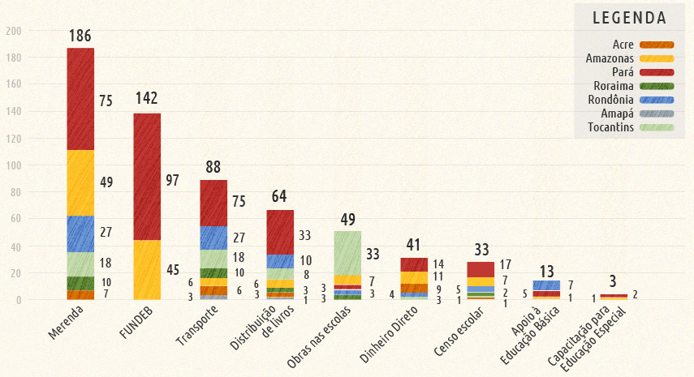

-
Merenda
Apoio a Alimentação Escolar na Educação Básica - PNAE
O Programa Nacional de Alimentação Escolar (PNAE) garante, por meio da transferência de recursos financeiros, a alimentação escolar dos alunos de toda educação básica matriculados em escolas públicas e filantrópicas, incluindo educação de jovens e adultos, escolas indígenas e as localizadas em áreas remanescentes de Quilombolas. É considerado o maior projeto de alimentação escolar do mundo, beneficiando 62,5 milhões de alunos só em 2009, por meio do repasse de recursos financeiros aos estados, Distrito Federal e municípios, da ordem de R$ 2 bilhões. Fonte: Ministério da Educação (Relatório de Avaliação do Plano Plurianual 2008-2011)
-
Capacitação para Educação Especial
Apoio a Formação de Professores e Profissionais para a Educação Especial
Tem por objetivo formar professores dos sistemas estaduais e municipais de ensino, que atuam no atendimento educacional especializado e na sala de aula comum, por meio da constituição de uma rede nacional de instituições públicas de educação superior que ofertem cursos de formação continuada de professores na modalidade à distância. Em 2009, contemplou 21.350 professores de 2.193 municípios. Fonte: Ministério da Educação (Relatório de Avaliação do Plano Plurianual 2008-2011)
-
Obras nas escolas
Apoio a reestruturação da rede fisica publica da Educação Básica
Tem como finalidade conceder apoio, mediante a transferência de recursos financeiros para construções, ampliações, reformas, adequações e adaptações de unidades de educação infantil padronizadas, assegurando condições apropriadas de infraestrutura e funcionamento aos estabelecimentos de educação básica pública. Em 2009, foram atendidas 1.036 escolas, o que equivale a 94% da meta estabelecida, com recursos da ordem de R$ 547 milhões. Fonte: Ministério da Educação (Relatório de Avaliação do Plano Plurianual 2008-2011)
-
Apoio à Educação Básica
Apoio ao Desenvolvimento da Educação Básica
Dada sua característica peculiar, propicia a execução de múltiplas iniciativas, além de ser fundamental para a efetivação das demandas oriundas dos Planos de Ações Articuladas (PAR). Apóia projetos que visam contribuir para o desenvolvimento e melhoria qualitativa do processo educacional em todas as etapas da educação básica. Isso ocorre por meio do financiamento de iniciativas do MEC, estabelecidas com as instituições públicas de todas as esferas de governo, quando couber e quando estabelecidas as prioridades. Em 2009, foram financiados projetos de construção de escolas nas regiões Norte e Nordeste; adquiridos mobiliários e equipamentos de escola, material didático e pedagógico; capacitados professores e profissionais da educação; além de apoiados eventos educacionais e de monitoramento e avaliação. Fonte: Ministério da Educação (Relatório de Avaliação do Plano Plurianual 2008-2011)
-
Transporte Escolar
Caminho da Escola e Apoio ao Transporte Escolar na Educação Básica - PNATE
Há duas iniciativas voltadas ao transporte de estudantes: Caminho da Escola e Apoio ao Transporte Escolar na Educação Básica - PNATE. Ambos visam ao atendimento de alunos moradores da zona rural.
O Caminho da Escola consiste na concessão, pelo Banco Nacional de Desenvolvimento Econômico e Social (BNDES), de linha de crédito especial para aquisição, pelos estados e municípios, de ônibus e microônibus zero quilômetro e de embarcações novas, com o objetivo de renovar frota de veículos escolares e garantir segurança e qualidade ao transporte dos estudantes contribuindo para redução da evasão escolar. Portanto, ampliando o acesso e a permanência na escola dos estudantes matriculados na Educação Básica da zona rural das redes estaduais e municipais.
Com relação ao PNATE, esse Programa tem como objetivo garantir o acesso e a permanência nos estabelecimentos escolares dos alunos do ensino fundamental público, por meio de transferência automática, sem necessidade de convênio ou outro instrumento congênere, de recursos financeiros para custear despesas com a manutenção de veículos escolares pertencentes às esferas municipal, estadual ou distrital; bem como para contratação dos serviços terceirizados de transporte. Em 2009, foram atendidos 4.962 municípios com recursos da ordem de R$ 421,7 milhões, o que beneficiou cerca de 5 milhões de alunos. Fonte: Ministério da Educação (Relatório de Avaliação do Plano Plurianual 2008-2011)
-
Censo Escolar
Censo Escolar da Educação Básica
Objetiva, por meio da realização do Censo Escolar em todo o país, a coleta de dados sobre estabelecimentos, matrículas, funções docentes, movimento e rendimento escolar. Trata-se do principal instrumento de coleta de informações da educação básica; abrange as suas diferentes etapas e modalidades. Com o fim de melhorar a qualidade da informação colhida pelo Censo Escolar, em 2007, foi criado o Educacenso, que é um sistema informatizado, fundamentado não apenas na quantidade de matrículas, mas, também, nos dados individualizados de cada estudante, professor, turma e escola do País, tanto da rede pública quanto da rede privada, evitando a duplicidade de cadastro de alunos e docentes. No ano de 2009, o Censo Escolar incluiu quesitos sobre jornada ampliada e educação em tempo integral. Foram contabilizados no Brasil, 52.580.452 estudantes na educação básica, que compreende a educação infantil (creche e pré-escola), o ensino fundamental (1º a 9º ano ou 1ª a 8ª série), o ensino médio, a educação profissional, a educação especial e a educação de jovens e adultos (nas etapas ensino fundamental e ensino médio). Do total de 197.468 escolas, aproximadamente, 86% de matrículas e 82% de escolas pertencem à rede pública de ensino. Em 2009, a ação executou R$ 9,5 milhões. Fonte: Ministério da Educação (Relatório de Avaliação do Plano Plurianual 2008-2011)
-
FUNDEB
Complementação da União ao Fundo de Manutenção e Desenvolvimento da Educação Básica e de Valorização dos Profissionais da Educação - Fundeb
Tem o objetivo primordial de melhorar a qualidade do ensino, beneficiando maior quantidade de alunos em território nacional, por meio da redistribuição de recursos previstos constitucionalmente. Essa ação assegura a participação da União, a título de complementação, na composição do Fundeb dos estados que apresentam valor per capita aluno/ano abaixo do valor mínimo nacional. Em 2009, foram destinados R$ 5,1 bilhões aos Estados de Alagoas, Amazonas, Bahia, Ceará, Maranhão, Pará, Paraíba, Pernambuco e Piauí, beneficiando um total de 16,5 milhões de alunos, que constituem parte dos 45,3 milhões de alunos da educação básica contemplados com os recursos do Fundeb. Os recursos financeiros que compõem o Fundo alcançaram o montante de aproximadamente R$ 67,1 bilhões, em 2009. Fonte: Ministério da Educação (Relatório de Avaliação do Plano Plurianual 2008-2011)
-
Dinheiro Direto na Escola
Dinheiro Direto na Escola para a Educação Básica
Tem por finalidade prestar assistência financeira, em caráter suplementar, às escolas públicas de educação básica, das redes estaduais, municipais e do Distrito Federal, e às escolas privadas de educação especial, mantidas por entidades privadas sem fins lucrativos. A iniciativa objetiva a melhoria da infraestrutura física e pedagógica das escolas, incluindo manutenção e conservação, e o reforço da autogestão escolar no plano financeiro, administrativo e didático; aquisição de equipamento, de material didático-pedagógico e de consumo; e capacitação/aperfeiçoamento de profissionais da educação. Foram beneficiadas 134 mil escolas com investimentos de aproximadamente R$ 1,2 bilhão. Destaca-se que, em 2009, foi acrescida parcela extra de 50% nas transferências de recursos do PDDE a todas as escolas públicas rurais da educação básica e às escolas públicas urbanas do ensino fundamental que cumpriram as execuções intermediárias do Índice de Desenvolvimento da Educação Básica (Ideb). Aproximadamente 26 mil escolas cumpriram essas execuções. Fonte: Ministério da Educação (Relatório de Avaliação do Plano Plurianual 2008-2011)
-
Distribuição de Livros
Distribuição de Materiais e Livros Didáticos para o Ensino Fundamental – PNLD
O Programa Nacional do Livro Didático provê de livros e materiais didáticos e de referência de qualidade os alunos e professores do ensino fundamental das redes federal, estadual, municipal e distrital. Em 2009, colaborou com a aquisição de 110 milhões de livros para beneficiar alunos do 1º ao 5º ano do ensino fundamental das redes públicas de ensino. Foram adquiridas, também, obras complementares para serem distribuídas às turmas do 1º e 2º ano do ensino fundamental da rede pública de ensino, totalizando 6,6 milhões de livros para o PNLD, fazendo com que a meta física ficasse 10,2% acima do previsto. Um total de 134,8 mil escolas e cerca de 29 milhões de alunos foram beneficiados com investimentos de R$ 591,4 milhões. Fonte: Ministério da Educação (Relatório de Avaliação do Plano Plurianual 2008-2011)
Voltar
Avançar
-
-
Número de irregularidades por programa de governo
 -
Número de irregularidades por tipo

-
Má gestão, corrupção e descontrole
O Ministério da Educação gasta bilhões de reais em repasses a estados e municípios para melhorar a educação básica, mas o objetivo não vem sendo atingido. Ao menos na Amazônia, onde os dados sobre desempenho escolar são desanimadores (veja a primeira reportagem desta série). Pior: os recursos estão indo pelo ralo da corrupção e do desperdício.
A Pública analisou relatórios de auditorias da CGU (Controladoria-Geral da União) realizadas em 2010 e 2011 em 32 cidades de todos os estados da região Norte. Os dados compilados a partir dos relatórios revelam um cenário de má administração, despesas irregulares e falta de prestação de contas. Também aparecem a ausência de controle social e casos de desvios de finalidade.
Após visitas a cidades do Acre, Amapá, Amazonas, Pará, Rondônia, Roraima e Tocantins, os técnicos da CGU relataram 619 irregularidades, o que resulta numa média de quase 20 irregularidades por município. Do total de problemas detectados, quase 40% referem-se a má gestão; cerca de 30% indicam despesas irregulares (muitos dos fatos anotados têm forte cheiro de corrupção); e 17% apontam ausência de prestação de contas (mais indícios de corrupção...).
O controle social também é falho em várias localidades. Os relatórios apontam 57 irregularidades nesse campo, indicando que os Conselhos Municipais de Educação – criados para que a sociedade pudesse monitorar as políticas públicas da Educação – não estão funcionando como se pretendia.
Problemas na gestão: falta de profissionalismo e de controle
Os relatórios analisados pela Pública indicam um quadro de muito despreparo da burocracia nas cidades: foram 241 irregularidades por falta de controle administrativo encontradas, numa média de 7,5 por cidade.
Estes são alguns dos casos relatados: ineficiência de controle de estoque e de distribuição de alimentos; recursos aplicados fora do prazo; erros na contratação de responsáveis por obras, falha na elaboração de projetos básicos pra creches; falta de controle sobre dados dos veículos e dos condutores nos programas de transporte; inadequação ou ausência de ficha de matrícula dos alunos; falta de conhecimentos técnicos para alimentar o sistema informatizado de distribuição de livros (o que resulta em erros na distribuição de livros didáticos).
Os relatórios analisados pela Pública indicam um quadro de muito despreparo da burocracia nas cidades: foram 241 irregularidades por falta de controle administrativo encontradas, numa média de 7,5 por cidade.
Estes são alguns dos casos relatados: ineficiência de controle de estoque e de distribuição de alimentos; recursos aplicados fora do prazo; erros na contratação de responsáveis por obras, falha na elaboração de projetos básicos pra creches; falta de controle sobre dados dos veículos e dos condutores nos programas de transporte; inadequação ou ausência de ficha de matrícula dos alunos; falta de conhecimentos técnicos para alimentar o sistema informatizado de distribuição de livros (o que resulta em erros na distribuição de livros didáticos).
Os relatórios analisados pela Pública indicam um quadro de muito despreparo da burocracia nas cidades: foram 241 irregularidades por falta de controle administrativo encontradas, numa média de 7,5 por cidade.
Estes são alguns dos casos relatados: ineficiência de controle de estoque e de distribuição de alimentos; recursos aplicados fora do prazo; erros na contratação de responsáveis por obras, falha na elaboração de projetos básicos pra creches; falta de controle sobre dados dos veículos e dos condutores nos programas de transporte; inadequação ou ausência de ficha de matrícula dos alunos; falta de conhecimentos técnicos para alimentar o sistema informatizado de distribuição de livros (o que resulta em erros na distribuição de livros didáticos).
Copie os dados utilizados no infográfico
| Lista de irregularidades | CSV | JSON | |
| Lista de cidades | CSV | JSON | GeoJSON |
| Lista de tipos de irregularidade | CSV | JSON | |
| Lista de programas do governo | CSV | JSON |
O código desenvolvido para este infográfico interativo está distribuído sob a licença GPLv3 e disponível para download no seu repositório.
Acesse o repositório ou faça o download